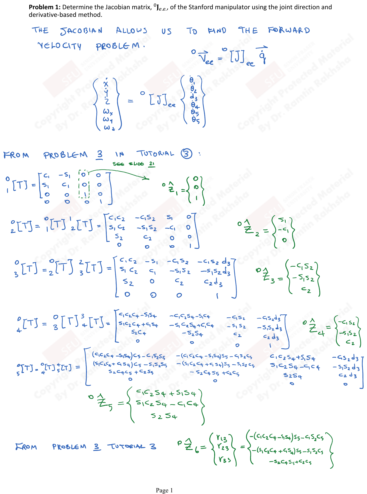

Tutorial 5: Jacobians & Static Forces
Problem: Determine the Jacobian matrix, ${}^{0}J_{EE}$, of the Stanford manipulator using the joint direction and derivative-based method.
The Jacobian allows us to find the forward velocity problem:
$${}^{0}\vec{V}_{EE} = \left[{}^{0}J\right]_{EE} \dot{\vec{q}}$$ $$\begin{Bmatrix} \dot{x} \\ \dot{y} \\ \dot{z} \\ \omega_x \\ \omega_y \\ \omega_z \end{Bmatrix} = \left[{}^{0}J\right]_{EE} \begin{Bmatrix} \dot{\theta}_1 \\ \dot{\theta}_2 \\ \dot{d}_3 \\ \dot{\theta}_4 \\ \dot{\theta}_5 \\ \dot{\theta}_6 \end{Bmatrix}$$From Problem 3 in Tutorial 3:
$${}^{0}_{1}T = \begin{bmatrix} C_1 & -S_1 & 0 & 0 \\ S_1 & C_1 & 0 & 0 \\ 0 & 0 & 1 & 0 \\ 0 & 0 & 0 & 1 \end{bmatrix}, \quad {}^{0}\hat{Z}_1 = \begin{Bmatrix} 0 \\ 0 \\ 1 \end{Bmatrix}$$ $${}^{0}_{2}T = \begin{bmatrix} C_1 C_2 & -C_1 S_2 & S_1 & S_1 d_2 \\ S_1 C_2 & -S_1 S_2 & -C_1 & -C_1 d_2 \\ S_2 & C_2 & 0 & 0 \\ 0 & 0 & 0 & 1 \end{bmatrix}, \quad {}^{0}\hat{Z}_2 = \begin{Bmatrix} S_1 \\ -C_1 \\ 0 \end{Bmatrix}$$ $${}^{0}_{3}T = \begin{bmatrix} C_1 C_2 & -S_1 & -C_1 S_2 & -C_1 S_2\, d_3 \\ S_1 C_2 & C_1 & -S_1 S_2 & -S_1 S_2\, d_3 \\ S_2 & 0 & C_2 & C_2\, d_3 \\ 0 & 0 & 0 & 1 \end{bmatrix}, \quad {}^{0}\hat{Z}_3 = \begin{Bmatrix} -C_1 S_2 \\ -S_1 S_2 \\ C_2 \end{Bmatrix}$$ $${}^{0}\hat{Z}_4 = \begin{Bmatrix} C_1 C_2 S_4 + S_1 S_4 \\ S_1 C_2 S_4 - C_1 S_4 \\ S_2 S_4 \end{Bmatrix}$$ $${}^{0}\hat{Z}_5 = \begin{Bmatrix} -(C_1 C_2 C_4 - S_1 S_4) S_5 - C_1 S_2 C_5 \\ -(S_1 C_2 C_4 + C_1 S_4) S_5 - S_1 S_2 C_5 \\ -S_2 C_4 S_5 + C_2 C_5 \end{Bmatrix}$$ $${}^{0}\hat{Z}_6 = \begin{Bmatrix} C_1 C_2 S_4 + S_1 S_4 \\ S_1 C_2 S_4 - C_1 C_4 \\ S_2 S_4 \end{Bmatrix}$$The position vector ${}^{0}\vec{P}_{EE}$ (with $d_6 = h$):
$${}^{0}\vec{P}_{EE} = \begin{Bmatrix} -(C_1 C_2 C_4 - S_1 S_4) S_5 + C_1 S_2 C_5) h - C_1 S_2\, d_3 \\ -(S_1 C_2 C_4 + C_1 S_4) S_5 + S_1 S_2 C_5) h - S_1 S_2\, d_3 \\ (-S_2 C_4 S_5 + C_2 C_5) h + C_2\, d_3 \end{Bmatrix}$$We require $\frac{\partial {}^{0}\vec{P}_{EE}}{\partial q_k}$ for $k = 1, 2, \ldots, 6$ where $\vec{q} = \{\theta_1, \theta_2, d_3, \theta_4, \theta_5, \theta_6\}^T$.
$$\frac{\partial {}^{0}\vec{P}_{EE}}{\partial \theta_1} = \begin{Bmatrix} ((S_1 C_2 C_4 + C_1 S_4) S_5 + S_1 S_2 C_5) h + S_1 S_2\, d_3 \\ -((-C_1 C_2 C_4 + S_1 S_4) S_5 + C_1 S_2 C_5) h - C_1 S_2\, d_3 \\ 0 \end{Bmatrix}$$ $$\frac{\partial {}^{0}\vec{P}_{EE}}{\partial \theta_2} = \begin{Bmatrix} (C_1 S_2 C_4 S_5 - C_1 C_2 C_5) h - C_1 C_2\, d_3 \\ (S_1 S_2 C_4 S_5 - S_1 C_2 C_5) h - S_1 C_2\, d_3 \\ (-C_2 C_4 S_5 - S_2 C_5) h - S_2\, d_3 \end{Bmatrix}$$ $$\frac{\partial {}^{0}\vec{P}_{EE}}{\partial d_3} = \begin{Bmatrix} -C_1 S_2 \\ -S_1 S_2 \\ C_2 \end{Bmatrix}$$ $$\frac{\partial {}^{0}\vec{P}_{EE}}{\partial \theta_4} = \begin{Bmatrix} (C_1 C_2 S_4 + S_1 C_4) S_5\, h \\ (S_1 C_2 S_4 - C_1 C_4) S_5\, h \\ S_2 S_4 S_5\, h \end{Bmatrix}$$ $$\frac{\partial {}^{0}\vec{P}_{EE}}{\partial \theta_5} = \begin{Bmatrix} -(-(C_1 C_2 C_4 - S_1 S_4) C_5 - C_1 S_2 S_5) h \\ -(-(S_1 C_2 C_4 + C_1 S_4) C_5 - S_1 S_2 S_5) h \\ (-S_2 C_4 C_5 - C_2 S_5) h \end{Bmatrix}$$ $$\frac{\partial {}^{0}\vec{P}_{EE}}{\partial \theta_6} = \begin{Bmatrix} 0 \\ 0 \\ 0 \end{Bmatrix}$$Note: For the prismatic joint (column 3), the angular velocity contribution is zero ($\vec{0}_{3\times1}$), and the linear velocity is $\hat{Z}_3$ (the joint direction).
Problem: Determine the Jacobian matrix, ${}^{0}J_{EE}$, of the Stanford manipulator using the joint direction and cross-product method.
Using Slide 24, the Jacobian columns are constructed as:
For revolute joints:
$$\text{Column } i = \begin{Bmatrix} {}^{0}\hat{Z}_i \times {}^{0}\vec{P}_{i \to EE} \\ {}^{0}\hat{Z}_i \end{Bmatrix}$$For prismatic joints:
$$\text{Column } i = \begin{Bmatrix} {}^{0}\hat{Z}_i \\ \vec{0} \end{Bmatrix}$$
Column 1 (Revolute):
${}^{0}\vec{P}_{1 \to EE} = {}^{0}\vec{P}_{EE}$ (since ${}^{0}\vec{P}_{0 \to 1} = \vec{0}$):
$${}^{0}\hat{Z}_1 \times {}^{0}\vec{P}_{0 \to EE} = \begin{Bmatrix} (S_1 C_2 C_4 + C_1 S_4) S_5 + S_1 S_2 C_5) h + S_1 S_2\, d_3 \\ -((-C_1 C_2 C_4 + S_1 S_4) S_5 + C_1 S_2 C_5) h - C_1 S_2\, d_3 \\ 0 \end{Bmatrix}$$Column 2 (Revolute):
PDF p.3From ${}^{0}_{2}T$: ${}^{0}\vec{P}_{0 \to 2} = \begin{Bmatrix} S_1 d_2 \\ -C_1 d_2 \\ 0 \end{Bmatrix}$
$${}^{0}\hat{Z}_2 \times {}^{0}\vec{P}_{2 \to EE} = \begin{Bmatrix} (C_1 S_2 C_4 S_5 - C_2 C_1 C_5) h - C_1 C_2\, d_3 \\ (S_1 S_2 C_4 S_5 - S_1 C_2 C_5) h - S_1 C_2\, d_3 \\ (-C_2 C_4 S_5 - S_2 C_5) h - S_2\, d_3 \end{Bmatrix}$$Column 3 (Prismatic):
PDF p.4 $${}^{0}\hat{Z}_3 = \begin{Bmatrix} -C_1 S_2 \\ -S_1 S_2 \\ C_2 \end{Bmatrix}$$Column 4 (Revolute):
Since frames $\{3\}$ and $\{4\}$ are coincident: ${}^{0}\vec{P}_{4 \to EE} = {}^{0}\vec{P}_{W \to EE}$
$${}^{0}\hat{Z}_4 \times {}^{0}\vec{P}_{W \to EE} = \begin{Bmatrix} (C_1 C_2 S_4 + S_1 C_4) S_5\, h \\ (S_1 C_2 S_4 - C_1 C_4) S_5\, h \\ S_2 S_4 S_5\, h \end{Bmatrix}$$Column 5 (Revolute):
$${}^{0}\hat{Z}_5 \times {}^{0}\vec{P}_{5 \to EE} = \begin{Bmatrix} -((C_1 C_2 C_4 - S_1 S_4) C_5 - C_1 S_2 S_5) h \\ -((S_1 C_2 C_4 + C_1 S_4) C_5 - S_1 S_2 S_5) h \\ (-S_2 C_4 C_5 - C_2 S_5) h \end{Bmatrix}$$Column 6 (Revolute):
$${}^{0}\hat{Z}_6 \times {}^{0}\vec{P}_{6 \to EE} = \begin{Bmatrix} 0 \\ 0 \\ 0 \end{Bmatrix}$$(Since $\hat{Z}_6$ is parallel to the vector from frame 6 to the end-effector)
The cross-product method yields the same Jacobian as the derivative method in Problem 5.1.
Problem: Consider for the Stanford manipulator a Jacobian based on a point on the end-effector that is coincident with the wrist centre. What is ${}^{0}J_W$?
The wrist centre position:
$${}^{0}\vec{P}_{0 \to W} = {}^{0}\vec{P}_{0 \to 3} = \begin{Bmatrix} -C_1 S_2\, d_3 \\ -S_1 S_2\, d_3 \\ C_2\, d_3 \end{Bmatrix}$$Finding $\frac{\partial {}^{0}\vec{P}_W}{\partial q_k}$ for $k = 1, 2, 3, 4, 5, 6$:
$$\frac{\partial {}^{0}\vec{P}_W}{\partial \theta_1} = \begin{Bmatrix} S_1 S_2\, d_3 \\ -C_1 S_2\, d_3 \\ 0 \end{Bmatrix}, \quad \frac{\partial {}^{0}\vec{P}_W}{\partial \theta_2} = \begin{Bmatrix} -C_1 C_2\, d_3 \\ -S_1 C_2\, d_3 \\ -S_2\, d_3 \end{Bmatrix}$$ $$\frac{\partial {}^{0}\vec{P}_W}{\partial d_3} = \begin{Bmatrix} -C_1 S_2 \\ -S_1 S_2 \\ C_2 \end{Bmatrix}, \quad \frac{\partial {}^{0}\vec{P}_W}{\partial \theta_4} = \frac{\partial {}^{0}\vec{P}_W}{\partial \theta_5} = \frac{\partial {}^{0}\vec{P}_W}{\partial \theta_6} = \begin{Bmatrix} 0 \\ 0 \\ 0 \end{Bmatrix}$$The Wrist-Centre Jacobian:
$$\left[{}^{0}J_W\right] = \begin{bmatrix} S_1 S_2 d_3 & -C_1 C_2 d_3 & -C_1 S_2 & 0 & 0 & 0 \\ -C_1 S_2 d_3 & -S_1 C_2 d_3 & -S_1 S_2 & 0 & 0 & 0 \\ 0 & -S_2 d_3 & C_2 & 0 & 0 & 0 \\ 0 & S_1 & 0 & C_1 C_2 S_4 + S_1 S_4 & \cdots & \cdots \\ 0 & -C_1 & 0 & S_1 C_2 S_4 - C_1 S_4 & \cdots & \cdots \\ 1 & 0 & 0 & S_2 S_4 & \cdots & \cdots \end{bmatrix}$$Note: The upper-right $3 \times 3$ block is all zeros because the wrist joint rotations ($\theta_4$, $\theta_5$, $\theta_6$) do not translate the wrist centre point.
Velocity Transformation:
To find ${}^{0}\vec{V}_{EE}$ from Slide 23:
$${}^{0}\vec{V}_{EE} = \left[T_V\right] \cdot {}^{0}\vec{V}_W$$where:
$$\left[T_V\right] = \begin{bmatrix} I_{3\times3} & -\left[{}^{0}\vec{P}_{EE \to W}\right]_\times \\ [0]_{3\times3} & I_{3\times3} \end{bmatrix}$$ $${}^{0}\vec{P}_{W \to EE} = \begin{Bmatrix} (C_1 C_2 C_4 - S_1 S_4) S_5 + C_1 S_2 C_5) h \\ (S_1 C_2 C_4 + C_1 S_4) S_5 + S_1 S_2 C_5) h \\ (S_2 C_4 S_5 - C_2 C_5) h \end{Bmatrix}$$Problem: Find ${}^{3}J_W$ for the Stanford manipulator and determine the velocity transformation $T_{V_{W \to EE}}$.
From Slide 32, the Jacobian is formed as:
$$\left[{}^{3}J_W\right] = \begin{bmatrix} {}^{3}\hat{Z}_1 \times {}^{3}\vec{P}_{1 \to W} & {}^{3}\hat{Z}_2 \times {}^{3}\vec{P}_{2 \to W} & {}^{3}\hat{Z}_3 & {}^{0}_{3\times1} & {}^{0}_{3\times1} & {}^{0}_{3\times1} \\ {}^{3}\hat{Z}_1 & {}^{3}\hat{Z}_2 & \vec{0} & {}^{3}\hat{Z}_4 & {}^{3}\hat{Z}_5 & {}^{3}\hat{Z}_6 \end{bmatrix}$$Joint Directions in Frame $\{3\}$:
$${}^{3}\hat{Z}_3 = \begin{Bmatrix} 0 \\ 0 \\ 1 \end{Bmatrix}, \quad {}^{3}\hat{Z}_2 = \begin{Bmatrix} 0 \\ 1 \\ 0 \end{Bmatrix}, \quad {}^{3}\hat{Z}_1 = \begin{Bmatrix} S_2 \\ C_2 \\ 0 \end{Bmatrix}$$ $${}^{3}\hat{Z}_4 = \begin{Bmatrix} -S_4 \\ C_4 \\ 0 \end{Bmatrix}, \quad {}^{3}\hat{Z}_5 = \begin{Bmatrix} -C_4 S_5 \\ -S_4 S_5 \\ -C_5 \end{Bmatrix}$$Position Vectors:
$${}^{3}\vec{P}_{1 \to W} = {}^{3}_{2}R \begin{Bmatrix} 0 \\ d_3 \\ 0 \end{Bmatrix} = \begin{bmatrix} 1 & 0 & 0 \\ 0 & 0 & -1 \\ 0 & 1 & 0 \end{bmatrix} \begin{Bmatrix} 0 \\ d_3 \\ 0 \end{Bmatrix} = \begin{Bmatrix} 0 \\ 0 \\ d_3 \end{Bmatrix}$$Cross products:
$${}^{3}\hat{Z}_1 \times {}^{3}\vec{P}_{1 \to W} = \begin{Bmatrix} S_2 \\ C_2 \\ 0 \end{Bmatrix} \times \begin{Bmatrix} 0 \\ 0 \\ d_3 \end{Bmatrix} = \begin{Bmatrix} C_2 d_3 \\ -S_2 d_3 \\ 0 \end{Bmatrix}$$ $${}^{3}\hat{Z}_2 \times {}^{3}\vec{P}_{2 \to W} = \begin{Bmatrix} 0 \\ 1 \\ 0 \end{Bmatrix} \times \begin{Bmatrix} 0 \\ 0 \\ d_3 \end{Bmatrix} = \begin{Bmatrix} d_3 \\ 0 \\ 0 \end{Bmatrix}$$Final Jacobian:
PDF p.7 $$\left[{}^{3}J_W\right] = \begin{bmatrix} 0 & -d_3 & 0 & 0 & 0 & 0 \\ -S_2 d_3 & 0 & 0 & 0 & 0 & 0 \\ 0 & 0 & 1 & 0 & 0 & 0 \\ S_2 & 0 & 0 & 0 & S_4 & -C_4 S_5 \\ C_2 & -1 & 0 & 0 & -C_4 & -S_4 S_5 \\ 0 & 0 & 0 & 0 & 0 & C_5 \end{bmatrix}$$Therefore: ${}^{3}\vec{V}_W = \left[{}^{3}J_W\right] \dot{\vec{q}}$
Velocity Transformation to Base Frame:
$${}^{0}\vec{V}_{EE} = \left[{}^{0}_{3}T_{V_{EE \to W}}\right] {}^{3}\vec{V}_W$$ $$\left[{}^{0}_{3}T_{EE \to W}\right] = \begin{bmatrix} {}^{0}_{3}R & [0]_{3\times3} \\ [0]_{3\times3} & {}^{0}_{3}R \end{bmatrix}, \quad \text{where } {}^{0}_{3}R = \begin{bmatrix} C_1 C_2 & -S_1 & -C_1 S_2 \\ S_1 C_2 & C_1 & -S_1 S_2 \\ S_2 & 0 & C_2 \end{bmatrix}$$ $${}^{0}\vec{P}_{EE \to W} = \begin{Bmatrix} ((C_1 C_2 C_4 - S_1 S_4) S_5 + C_1 S_2 C_5) h \\ ((S_1 C_2 C_4 + C_1 S_4) S_5 + S_1 S_2 C_5) h \\ (S_2 C_4 S_5 - C_2 C_5) h \end{Bmatrix}$$Problem: Solve the inverse velocity problem of the Stanford manipulator.
From Problem 5.4, split $\left[{}^{3}J_W\right]$ into sub-matrices (Slide #33):
$$\left[{}^{3}J_W\right] = \begin{bmatrix} [A] & [B] \\ [C] & [D] \end{bmatrix}$$where:
$$[A] = \begin{bmatrix} 0 & -d_3 & 0 \\ -S_2 d_3 & 0 & 0 \\ 0 & 0 & 1 \end{bmatrix}, \quad [B] = \begin{bmatrix} 0 & 0 & 0 \\ 0 & 0 & 0 \\ 0 & 0 & 0 \end{bmatrix} = [0]$$ $$[C] = \begin{bmatrix} S_2 & 0 & 0 \\ C_2 & -1 & 0 \\ 0 & 0 & 0 \end{bmatrix}, \quad [D] = \begin{bmatrix} 0 & S_4 & -C_4 S_5 \\ 0 & -C_4 & -S_4 S_5 \\ 0 & 0 & C_5 \end{bmatrix}$$Computing the Inverses:
$$[A]^{-1} = \begin{bmatrix} 0 & -\frac{1}{S_2 d_3} & 0 \\ -\frac{1}{d_3} & 0 & 0 \\ 0 & 0 & 1 \end{bmatrix}$$(Since $|A| = S_2 d_3^2$)
$$\left[{}^{3}J_W\right]^{-1} = \begin{bmatrix} [A^{-1}] & [0]_{3\times3} \\ -[C][B][A^{-1}] & [C^{-1}] \end{bmatrix}$$Velocity Degeneracies:
The inversion of $\left[{}^{3}J_W\right]$ is not possible if the matrix is singular. This is known as velocity degeneracy.
$$|{}^{0}J_W| = |A| \cdot |C| = S_2\, d_3^2\, S_5 = 0$$The velocity degeneracies for the Stanford mechanism are:
- $S_2 = 0$ (i.e., $\theta_2 = 0°$ or $180°$)
- $d_3 = 0$ (prismatic joint fully retracted)
- $S_5 = 0$ (i.e., $\theta_5 = 0°$ or $180°$)
Problem: Solve the inverse force problem of the Stanford manipulator. Find $\vec{\tau}$ for known forces and moments ${}^{0}\vec{F}_{EE}$ applied on the tip of the end-effector. What are the required joint torques/forces to sustain ${}^{0}\vec{F}_{EE}$?
From Slide #38:
$$\vec{\tau} = \left[{}^{0}J\right]^T_{EE} \cdot {}^{0}\vec{F}_{EE} = \left[{}^{0}J\right]^T \cdot {}^{0}\vec{F}_{W} = \left[{}^{3}J_W\right]^T \cdot {}^{3}\vec{F}_W$$Given that the end-effector is a rigid object, we can use any point on it (e.g., wrist), and any frame (e.g., $\{3\}$). We just have to transform ${}^{0}\vec{F}_{EE}$ to the desired frame.
Let ${}^{3}\vec{F}_W$ be known:
$$\vec{\tau} = \left[{}^{3}J_W\right]^T {}^{3}\vec{F}_W$$ $$\vec{\tau} = \begin{bmatrix} 0 & -S_2 d_3 & 0 & S_2 & C_2 & 0 \\ -d_3 & 0 & 0 & 0 & -1 & 0 \\ 0 & 0 & 1 & 0 & 0 & 0 \\ 0 & 0 & 0 & 0 & 0 & 0 \\ 0 & 0 & 0 & S_4 & -C_4 & 0 \\ 0 & 0 & 0 & -C_4 S_5 & -S_4 S_5 & C_5 \end{bmatrix} \begin{Bmatrix} {}^{3}f_x \\ {}^{3}f_y \\ {}^{3}f_z \\ {}^{3}m_x \\ {}^{3}m_y \\ {}^{3}m_z \end{Bmatrix}$$Individual Joint Torques/Forces:
$$\tau_1 = -S_2\, d_3\, ({}^{3}f_y) + S_2\, ({}^{3}m_x) + C_2\, ({}^{3}m_y)$$ $$\tau_2 = -d_3\, ({}^{3}f_x) - ({}^{3}m_y)$$ $$f_3 = ({}^{3}f_z)$$ $$\tau_4 = 0$$ $$\tau_5 = S_4\, ({}^{3}m_x) - C_4\, ({}^{3}m_y)$$ $$\tau_6 = -C_4 S_5\, ({}^{3}m_x) - S_4 S_5\, ({}^{3}m_y) + C_5\, ({}^{3}m_z)$$Note: $\tau_4 = 0$ because the fourth joint axis passes through the wrist centre, so forces/moments at the wrist do not create a torque about joint 4.